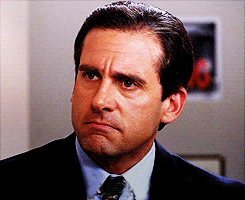

Michael Scott: You're kidding me! God! You say radon is silent but deadly and then
you expect me not to make farting noises with my mouth? What is this! You know what we're
not going to die of radon we're going to die of boredom.
[office laughs]
Michael Scott: Right? And if I had a gun, with two bullets, and I was in a room with
Hitler, Bin Laden and Toby, I would shoot Toby twice.
[disapproval from everyone]
Pam Wins a Dundie
Michael Scott: And this next award is going out to our own little Pam Beesly. I think we all k
now what award Pam is gonna be getting this year. It is the Whitest Sneakers Award, because she
always has the whitest tennis shoes on. Get on down here! Pam Beesly, ladies and gentlemen! Oh, here we go.
Pam Beesly: [very drunk] I have so many people to thank for this award. Okay, first off, my Keds,
because I couldn't have done it without them. Thank you. Let's give Michael a round of applause for
emceeing tonight, because this is a lot harder than it looks.
[applause]
Pam Beesly: And also because of Dwight, too.
[silence]
Pam Beesly: So, finally, I wanna thank God, because God gave me this Dundie and I feel God in this Chili's tonight.
Pam Beesly: [Pam whoops loudly]
Chili's Manager: We have a strict policy here not to over-serve. Apparently, this young woman was
sneaking drinks off of other people's tables. I Xeroxed her driver's license, and she is not welcome at
this restaurant chain ever again.
Oh, my God! I just want to say that this was the best Dundies ever. -Pam Beesly
A Dangerous Warehouse

'Why are you the way that you are?'
Toby: Actually, I didn't think it was appropriate to invite children since it's, uh, you know.
There's gambling and alcohol... And it's in our dangerous warehouse. And it's a school night.
And, you know, Hooters is catering. You know. Is that- is that enough? Should I keep going?
Michael Scott: Why are you the way that you are? Honestly, every time I try to do something fun
or exciting, you make it not that way. I hate so much about the things that you choose to be